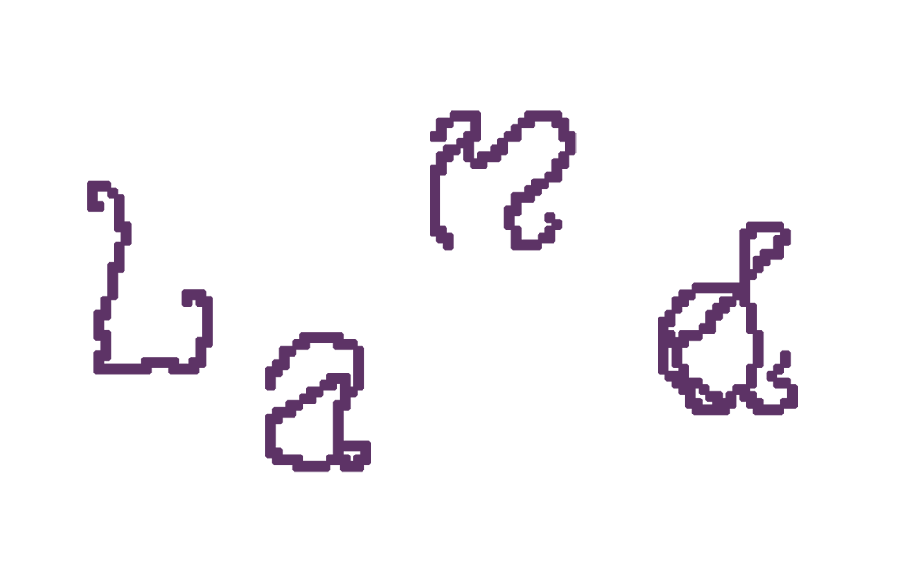
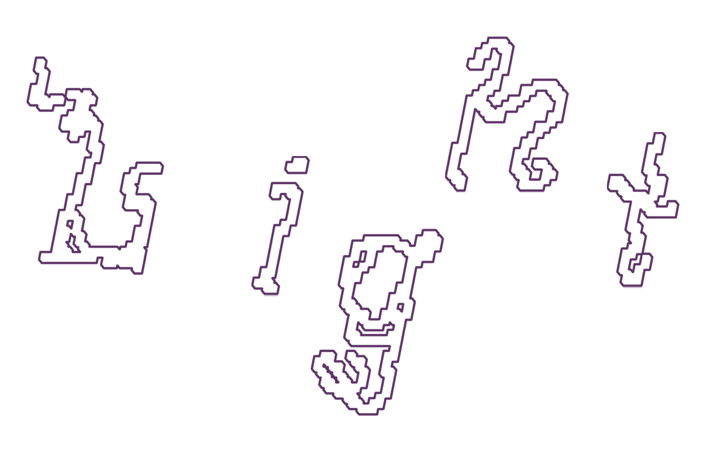

Land Light es un festival de creación de instalaciones efímeras.
Durante la semana del 3 al 9 de agosto de 2026, cincuenta personas nos perderemos en una masía aislada en Teruel para explorar la creación con la naturaleza en sinergia con los medios audiovisuales.
En qué consiste
Land Light es un proyecto co-creado de exploración y creación colectiva en torno al Land Art y su diálogo con medios audiovisuales como la luz, sonido, vídeo, visuales, etc. Descubre más en nuestra historia y programa.
Durante una semana, 50 personas convivimos en un entorno aislado, sin cobertura ni los suministros habituales, generando un espacio de desconexión de los estímulos urbanos y de la vida hiperconectada.
Proponemos una experiencia inmersiva que invita a habitar el paisaje desde la escucha, la presencia y la relación consciente con el entorno, impulsando la creación libre de instalaciones.
Para activar la experimentación y ofrecer un punto de partida, el encuentro plantea distintas actividades organizadas en dos líneas de programación:

Procesos de experimentación analógica ligados a la exploración del territorio, acercándonos al paisaje de forma no intrusiva para recorrerlo, observar y crear

Prácticas lumínicas, sonoras y audiovisuales en interacción con la naturaleza, que buscan habitar el paisaje nocturno y abrir nuevas percepciones del territorio
A lo largo de la semana se desarrolla un laboratorio colectivo donde cada participante investiga, prueba y construye su propia pieza y/o colabora en las creaciones de otras personas.
El encuentro culmina en una muestra final nocturna donde las instalaciones creadas se activan en un recorrido musical, compartiendo procesos, habitando y danzando las obras, celebrando en comunidad todo lo vivido.


Objetivos

Creación y naturaleza
Fomentar la exploración y la creación artística en diálogo con el espacio natural, promoviendo prácticas respetuosas y conscientes con el territorio.

Comunidad y co-creación
Impulsar la creación de una red de personas interesadas en la cooperación y la construcción colectiva de un encuentro co-creado por y para la comunidad participante.

Desconexión y autonomía
Proponer una experiencia de aislamiento en un lugar sin acceso a servicios habituales como electricidad, agua corriente y cobertura, como vía para repensar la relación con los recursos y el entorno.
Preguntas Frecuentes
Land Light es un espacio de creación dirigido a cualquier persona mayor de 18 años, con interés en el arte, diseño, arquitectura, fotografía, luz, sonido, video, ecología y un largo etc. No hace falta que tengas experiencia en la creación artística, solo que quieras formar parte de un laboratorio colaborativo basado en la experimentación y los cuidados.
Puedes formar parte del festival de distintas maneras: asistiendo como participante general, compartiendo tu práctica o siendo voluntarix.
Si quieres venir como participante deberás rellenar el formulario que encontrarás en el apartado Cómo ser parte y elegir el tipo de hospedaje que prefieres. Después recibirás un correo con los datos bancarios para realizar la transferencia.
Si quieres proponer una actividad, puedes presentarte a la convocatoria; y si te interesa apoyar en la organización, escríbenos un email para sumarte al equipo de voluntarixs
La masía se encuentra entre Villarluengo y Tronchón, en la provincia de Teruel. Cuando confirmes tu asistencia recibirás las coordenadas exactas.
Necesitarás un vehículo. Si no dispones de uno, apelamos a la fuerza grupal y ofrecemos un grupo de Telegram para compartir comunicaciones y coche con otros participantes. No te preocupes, porque todxs nos ayudamos para llegar.
No, consideramos que es crucial venir todos los días porque diseñamos esta experiencia para ser disfrutada desde el inicio hasta el final. Claramente puedes llegar e irte cuando quieras, pero desde Land Light queremos incentivar la estancia completa.
No. Este encuentro se basa en la creación situada. Antes de idear las instalaciones, consideramos fundamental reconocer el entorno y dejar que sea este quien inspire el proceso. Por ello, recomendamos traer únicamente materiales con los que te apetezca experimentar. El resto surgirá en el momento.
Sí, siempre y cuando te responsabilices de su bienestar y que veles de que no suponga una molestia para ninguna persona participante y/o actividad. Menciónala como acompañante en el formulario cuando te inscribas 😊